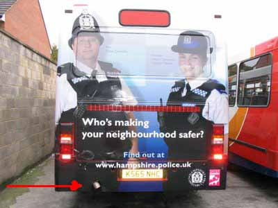

Em Hampshire, no Reino Unido, o governo lançou uma campanha publicitária para divulgar os serviços da polícia local, e aproximar a instituição da população. Ótimo!
Só que o designer que editou a foto para ser usada como propaganda na traseira dos ônibus não previa isso... ;)

Seria, sei lá, um novo tipo de proteção balística...